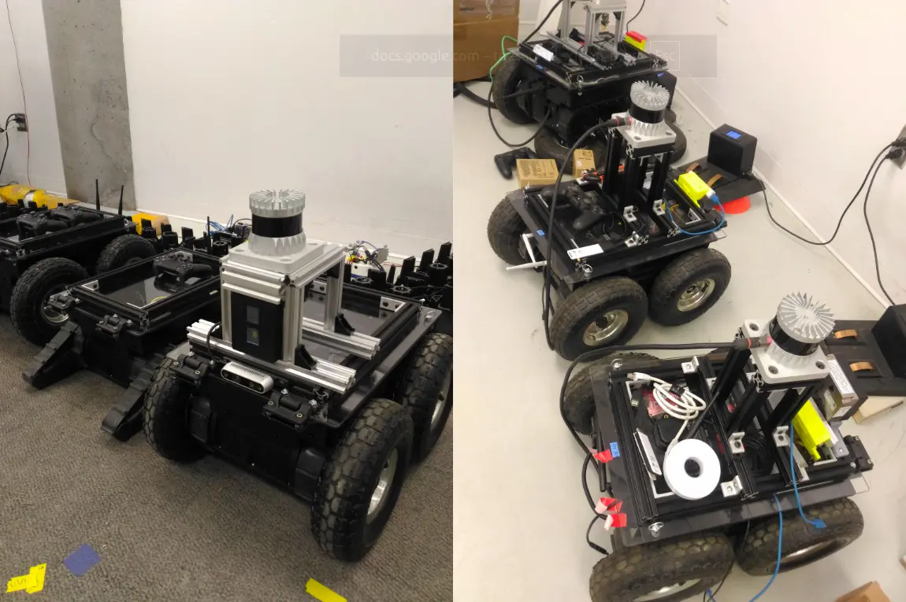
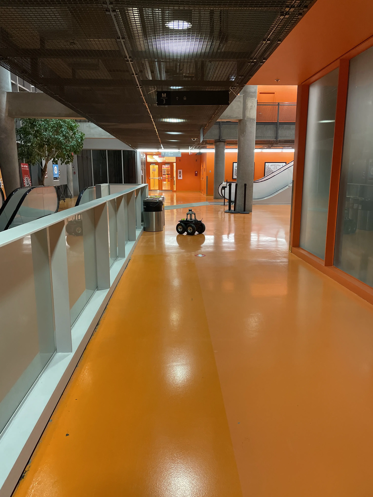
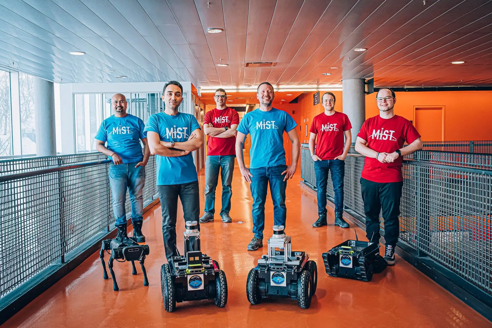

Autonomous Planetary Exploration Robotics
IGLUNA multi-robot planetary analogue exploration project using a team of three mobile rovers.
This project focused on a MIST Lab multi-rover platform developed for exploration and mapping in lunar and Martian cave analogue environments during the IGLUNA 2021 campaign.
The system used a team of three mobile rovers equipped with onboard computing, communication, sensing, and mapping hardware. My contribution focused on power management, electrical integration, and wiring for added payloads, including LiDAR, RealSense cameras, perception sensors, routers, and control boards.
My Contributions
My work focused on the electrical preparation of the three-rover platform, especially power distribution and wiring for onboard payloads and added sensing hardware.
- Integrated power and wiring connections for onboard rover payloads across the three-rover platform.
- Worked on power management for added payloads, including LiDAR, RealSense cameras, perception sensors, routers, and control boards.
- Organized electrical wiring and harnessing to connect rover subsystems reliably within the available onboard space.
- Supported electrical bring-up and troubleshooting of rover payload connections before deployment.
- Prepared rover electrical systems to support field testing during the IGLUNA 2021 campaign.
System Architecture
The platform was built around three mobile rovers carrying onboard sensing, computing, communication, and mapping payloads. My work centered on the electrical layer that powered and connected these rover loads.
Power Distribution
The rovers required organized power distribution for onboard electronics, LiDAR, RealSense cameras, perception sensors, communication hardware, routers, and control boards.
Payload Wiring
Wiring and harnessing were prepared to connect the added rover loads while keeping the onboard electrical layout practical for testing, maintenance, and field use.
Field-Ready Electrical Integration
Electrical bring-up and troubleshooting helped prepare the rover payload systems for operation during the IGLUNA 2021 field campaign.
Validation
Validation focused on confirming that the rover electrical systems could power and connect the added onboard payloads reliably during integration and field preparation.
Electrical Bring-Up
Power and wiring connections were checked during system integration to verify that onboard payloads, sensors, communication devices, and control boards were connected correctly.
Payload Integration Checks
Added rover payloads, including LiDAR, RealSense cameras, perception sensors, routers, and control boards, were integrated into the onboard electrical layout and prepared for field operation.
Field Preparation
The electrical integration work supported rover preparation for field testing and deployment during the IGLUNA 2021 campaign.
News and Media
Selected public coverage related to the IGLUNA 2021 campaign, MIST Lab rover swarms, and autonomous robotic systems for space exploration.
IGLUNA and Rover Swarm Coverage
Public coverage of the IGLUNA 2021 campaign and the MIST Lab multi-rover platform for lunar and Martian cave exploration and mapping.
Related MIST Lab Research Coverage
Additional media coverage connected to MIST Lab autonomous robotics, field deployment, and space exploration technologies.
Project Gallery
Selected images and video from rover payload integration, indoor testing, outdoor validation, and public project coverage. Additional diagrams, technical details, and mission context are available through the linked news and media articles.


Video credit: Giovanni Beltrame

Photo credit: Caroline Perron